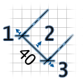
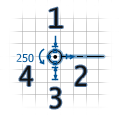
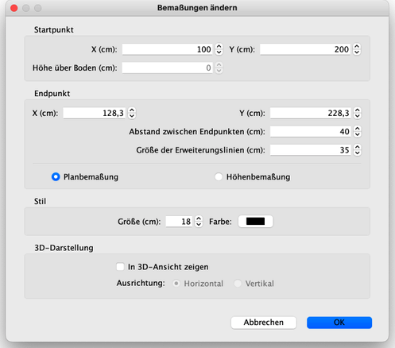
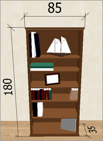

| Bemaßungen ändern | |||
|
Sie können die Position und die Größe der Bemaßungen mit der Maus verändern oder mit Plan > Bemaßungen
editieren…
Wenn eine Bemaßung ausgewählt ist, können Sie außerdem:
 |
|
|
Wenn eine Höhenbemaßung ausgewählt ist, können Sie sie verschieben, ihre Höhe, ihren Winkel und die Größe ihrer Verlängerungslinien mit Hilfe der folgenden Anfassern ändern.  |
|
|
Wenn der Mauszeiger über einem dieser Anfasser ist, verändert er sich um anzuzeigen, dass Sie diesen Punkt per Drag&Drop verändern können. Während Sie dies tun, wird die veränderte Bemaßung und ihre Länge im Wohnungsplan angezeigt. Eine Bemaßung kann auch mit Hilfe des Dialogs Bemaßungen ändern bearbeitet werden, indem Sie auf diese Bemaßung im Grundriss doppelklicken oder indem Sie nach der Auswahl der Bemaßung Plan > Bemaßung editieren… wählen. 
Im Dialog Bemaßungen ändern können Sie die Koordinaten des Anfangs- und Endpunkts ändern,
die Länge der Verlängerungslinien, ob es sich um eine Grundriss- oder eine Höhenbemaßung handelt
die Höhe eines Objekts, seine Schriftgröße, seine Farbe und ob es in der 3D-Ansicht angezeigt werden soll.  |
|